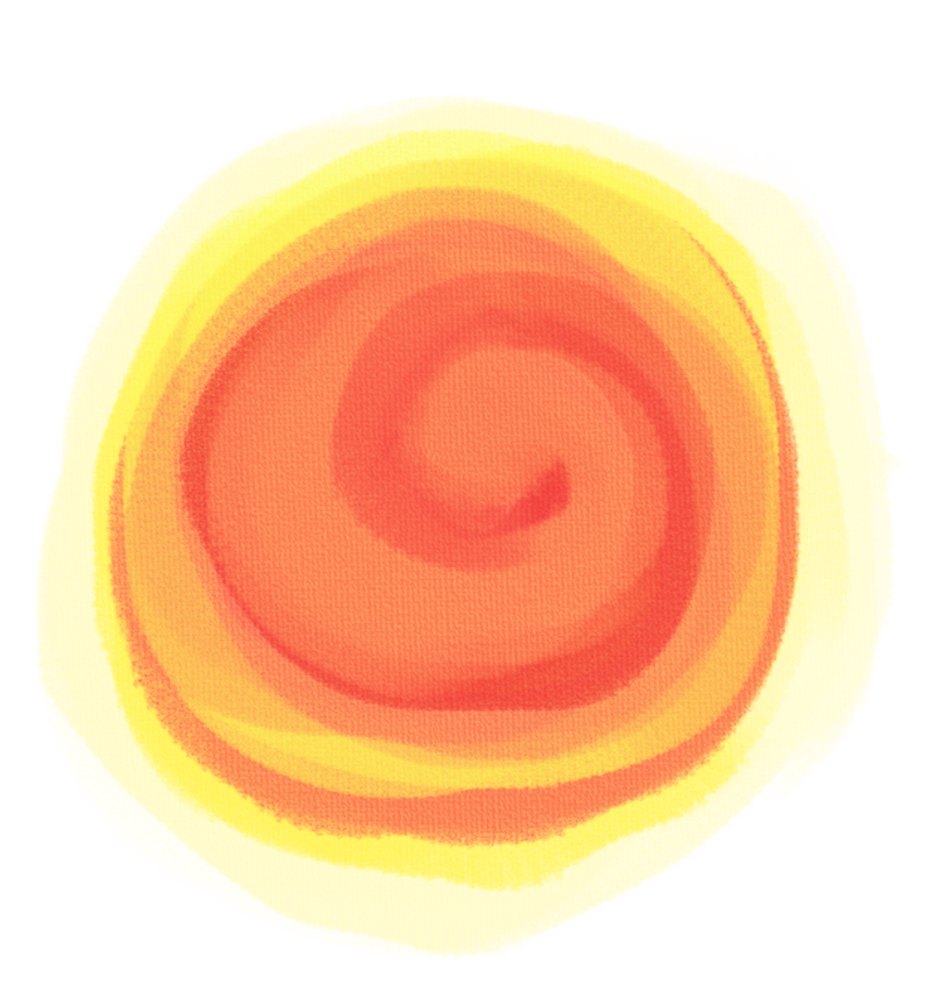

10 suns rose all at once bringing anguish to people

Hou Yi, a skilled archer, shot down nine of the suns and left one for light
An immortal gifts Hou Yi an elixir of immortality for his bravery

However, Hou Yi does not want to become an immortal without his wife, Chang'e so he does not drink it and leaves it for Chang'e to keep safe
One of Hou Yi's apprentices, Feng Meng learns of the elixir and breaks into their house

Chang'e refused to hand over the elixir and drinks it herself, flying into the sky and taking residence on the moon to stay near Hou Yi
Hou Yi come home to this. Heartbroken, he displays fruits and cakes Chang'e likes.

People hearing what happened join Hou Yi in giving sacrifices to Chang'e, she became known as the Moon Goddess
Mid-Autumn Festival is celebrated on every fifteeth day of the eighth month of the Lunar Calendar. It is a festival celebrating reunions between families and friends. There are many origins and differing ways of celebrating this holiday, this is one of them
Home